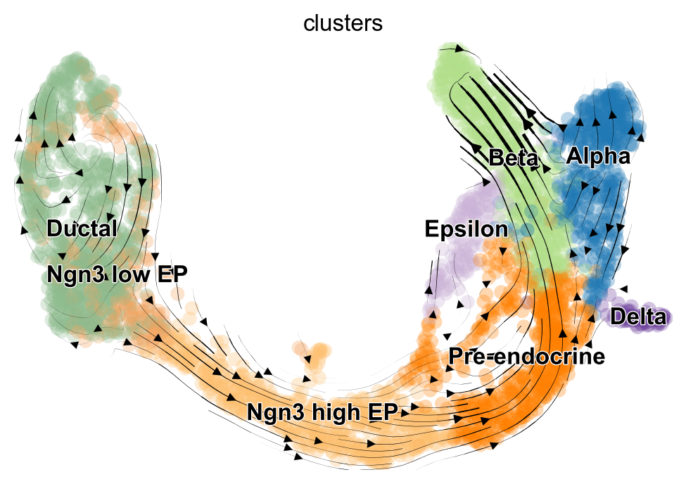
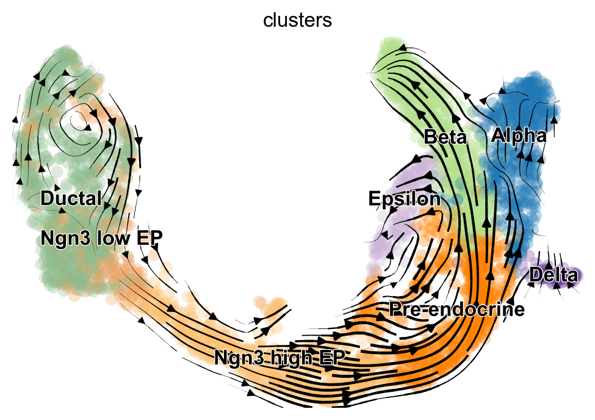

16. RNA velocity#
关键要点
要推断 RNA velocity，所研究的发育过程的时间尺度必须与 RNA 分子的半衰期相当。例如，胰腺内分泌发生（pancreatic endocrinogenesis）就满足这一要求 [Bastidas-Ponce et al., 2019] 但在阿尔茨海默病、帕金森病等长期慢性病中则不满足。同样，RNA velocity 分析也不适用于稳态系统，例如（成熟）细胞类型之间不存在任何转变的外周血单核细胞。
只有当底层的模型假设（大致）成立时，RNA velocity 才能被稳健、可靠地推断出来。为检验这些假设，可以研究相图（phase portrait），确认它们是否呈现出预期的杏仁形。如果某个基因包含多段明显不同的动力学，则应谨慎进行 RNA velocity 分析，并可能需要把数据按单个谱系拆分。
传统上，高维的 RNA velocity 向量是通过投影到数据的低维表示上来可视化的。这种用于验证假说的方法可能出错、产生误导，因为投影出的速度流高度依赖于：(1) 纳入的基因数量，以及 (2) 所选的绘图参数。此外，在低维嵌入的边界处，投影质量会下降 [Manno et al., 2018].
环境设置
安装 conda:
在创建环境之前，请确保 conda 已安装在您的系统中。
保存 yml 内容:
将 yml 选项卡中的内容复制到名为
environment.yml的文件中。
创建环境:
打开终端或命令提示符。
运行以下命令：
conda env create -f environment.yml
激活环境:
创建好环境后，使用以下命令激活它：
conda activate <environment_name>
替换
<environment_name>，名称就是在environment.yml文件中指定的那个。在 yml 文件里，它看起来像这样：name: <environment_name>
验证安装:
通过运行以下命令，检查环境是否创建成功：
conda env list
name: rna_velocity
channels:
- defaults
- conda-forge
dependencies:
- conda-forge::python=3.13
- conda-forge::ipykernel=7.2.0
- conda-forge::scvelo=0.3.3
- pip
- pip:
- lamindb
获取数据和笔记本
本书使用 lamindb，并通过 theislab/sc-best-practices 实例 来存储、共享和加载数据集与笔记本。感谢 Lamin Labs 提供免费托管服务。
安装 lamindb
安装 lamindb Python 软件包：
pip install lamindb
可选择创建 lamin 账户
按照以下 说明 注册并登录。
验证你的设置
运行
lamin connect命令：
import lamindb as ln ln.Artifact.connect("theislab/sc-best-practices").df()
你现在应该看到最多100个存储的数据集。
访问数据集（Artifact）
在 Artifacts 页面 搜索该数据集。
加载一个 Artifact 及其对应的对象：
import lamindb as ln af = ln.Artifact.connect("theislab/sc-best-practices").get(key="key_of_dataset", is_latest=True) obj = af.load()
该对象现在已可在内存中访问，并可用于分析。请调整
ln.Artifact.connect("theislab/sc-best-practices").get("SOMEIDXXXX")后缀以获取相应的版本。访问笔记本（Transform）
在 Transforms 页面 搜索该笔记本。
加载笔记本：
lamin load <notebook url>
这会把笔记本下载到当前工作目录。与
Artifacts类似，你可以调整后缀 ID 来获取旧版本。
16.1. 动机#
单细胞数据集使我们能够以高分辨率研究早期发育等生物学过程。不过，由于分析的是单细胞而非整个组织，例如细胞表型特征随时间的变化就无法被追踪。这一点源于单细胞测序方案的破坏性：一个细胞一旦被测序就会被破坏，因此无法在之后的时间点再次测量它的特征。值得注意的是，实验技术不仅无法在不同时间测量细胞的总体谱，也无法测量这些变化发生的快慢。要恢复细胞在发育全景中所处的时间位置，可以借助 轨迹推断 （TI）这一领域的工具来实现。然而，经典的 TI 方法并不提供任何有方向的、动态的信息。此外，这些算法通常也不会利用转录组读数和相似性之外的信息。
16.2. 对 RNA velocity 建模#
细胞转录组谱的改变，是由一连串事件触发的：大致来说，DNA 被转录，产生所谓的未剪接前体信使 RNA（pre-mRNA）。未剪接的 pre-mRNA 既包含与翻译相关的区域（外显子 exon），也包含非编码区域（内含子 intron）。这些非编码区域会被剪接掉， 即移除，从而形成已剪接的成熟 mRNA。虽然单细胞 RNA 测序（scRNA-seq）方案无法在多个时间点捕捉转录组，但它们确实包含了把未剪接与已剪接 mRNA 读数区分开来所需的信息 [He et al., 2022, Manno et al., 2018, Melsted et al., 2021, Srivastava et al., 2019].
识别出未剪接和已剪接的读数，就可以建立一个描述剪接动力学的动态模型 [Zeisel et al., 2011] 并基于单细胞数据推断相应的模型权重。该模型所描述的已剪接 RNA 的变化，就称为 RNA velocity [Manno et al., 2018]。目前的 RNA velocity 模型假设以下基因特异的模型
模型由转录率 \(\alpha_g\)、剪接率 \(\beta_g\) 以及已剪接 RNA 的降解率 \(\gamma_g\) 描述。虽然每个基因的动力学都是相互独立建模的，但为了记号简洁，我们将略去下标 \(g\)。尽管动力系统中的参数估计领域已被充分研究，但这些推断算法都要求知道每个观测对应的时间。因此，这些传统方法无法用于从 scRNA-seq 数据中推断 RNA velocity 及其模型参数。
16.3. 参数推断#
单细胞测量是快照数据，因此无法相对时间作图。相反，经典的 RNA velocity 方法依赖于研究每个细胞特异的二元组（tuple） \((u, s)\)，即每个基因的未剪接与已剪接 RNA。这些二元组的集合构成了所谓的相图。假设转录、剪接和降解的速率均为常数，相图会呈现杏仁形：上弧对应诱导阶段，下弧对应抑制阶段。然而，由于真实数据存在噪声，直接把未剪接计数对已剪接计数作图，并不能还原出预期的杏仁形。因此，需要先对数据做平滑。传统上，这一预处理步骤是：在细胞-细胞相似性图中，用每个细胞的邻居对其基因表达取平均。
16.3.1. 稳态模型#
估计 RNA velocity 的第一种尝试，假设基因之间相互独立，且底层动力学由上述模型支配。此外，它还假设：(1) 动力学已达到平衡，(2) 速率为常数，(3) 所有基因共享同一个剪接速率。下文中，我们将把这一模型称为 稳态模型 （因为第一个假设）。稳态本身位于相图的右上角（诱导阶段）及其原点（抑制阶段）。基于这些极端分位数， 稳态模型 用线性回归拟合来估计稳态比值。RNA velocity 随后被定义为相对于该拟合的残差。
尽管 稳态模型 能在某些系统中成功恢复发育方向，但它本质上受模型假设限制。最容易被违反的两个假设是：基因间共享同一剪接速率，以及实验过程中能观测到平衡态。因此，在这些情形下的推断会得出错误结果。此外，稳态模型 只考虑数据的一个子集，而且只推断稳态比值，并不推断每个模型参数。
16.3.2. EM 模型#
为克服 稳态模型 的局限性，研究者提出了若干扩展。迄今最流行的是 scVelo 中实现的 EM 模型 [Bergen et al., 2020]。该模型不再假设已经达到稳态，也不再假设各基因共享同一剪接速率。此外，它使用所有数据点来推断完整的参数集，以及剪接模型中基因和细胞特异的潜在时间。该算法使用期望最大化（EM）框架来估计参数。E 步中未观测的变量是每个细胞的时间和状态（诱导、抑制或稳态），其余所有模型参数都在 M 步中推断。
虽然 EM 模型 不再依赖 稳态模型 的关键假设，因而适用范围更广，但推断出的 RNA velocity 仍可能与已有的生物学知识相违背 [Bergen et al., 2021]，[Barile et al., 2021]。造成这种失败的原因主要有两方面：一方面，该模型仍然假设速率为常数。因此，一旦这些假设不成立，例如在红系成熟过程中 [Barile et al., 2021]，推断就会出错。另一方面，所提出的模型和它的前身一样依赖相图。因此，只要基因的相图不符合预期形状，该算法本质上就不适用、会失效。
16.4. 胰腺内分泌发生中的 RNA velocity 推断#
为了给出一个如何推断 RNA velocity 的实际例子，我们分析胰腺中的内分泌发育过程 [Bastidas-Ponce et al., 2019]。在这个系统中，前内分泌细胞(Ductal, Ngn3 low EP, Ngn3 high EP, Pre-endocrine）会发育成四种内分泌细胞类型（Alpha, Beta, Delta, Epsilon）。在这里，我们使用 scVelo [Bergen et al., 2020] 来推断 RNA velocity。
16.4.1. 环境设置#
import warnings
warnings.filterwarnings("ignore", category=DeprecationWarning)
import lamindb as ln
import scanpy as sc
import scvelo as scv
ln.track("LNBj60hdG1tm")
→ loaded Transform('LNBj60hdG1tm0000', key='rna_velocity.ipynb'), re-started Run('epuf25HOG55kJ58q') at 2026-02-16 22:06:34 UTC
→ notebook imports: lamindb==2.1.2 scanpy==1.11.5 scvelo==0.3.3
16.4.2. 常规设置#
scv.settings.set_figure_params("scvelo")
16.4.3. 数据加载#
为了借助 scVelo来估算 RNA velocity，未剪接和已剪接的计数需要存储在 AnnData 的 layers 槽中。我们建议传入全部计数， 即未经处理的原始数据，传给 scVelo 分析流程。
af = ln.Artifact.connect("theislab/sc-best-practices").get(
key="trajectory/rna_velocity.h5ad", is_latest=True
)
adata = af.load()
adata
AnnData object with n_obs × n_vars = 3696 × 27998
obs: 'clusters_coarse', 'clusters', 'S_score', 'G2M_score'
var: 'highly_variable_genes'
uns: 'clusters_coarse_colors', 'clusters_colors', 'day_colors', 'neighbors', 'pca'
obsm: 'X_pca', 'X_umap'
layers: 'spliced', 'unspliced'
obsp: 'distances', 'connectivities'
16.5. 数据预处理#
由于 scRNA-seq 数据噪声大且稀疏，必须先对数据做预处理，才能用以下方法推断 RNA velocity： steady-state 或 EM 模型。第一步，我们过滤掉在未剪接和已剪接 RNA 中都表达不足的基因（这里是至少 20）。接着，对未剪接和已剪接 RNA 分别做细胞大小归一化，相应计数存放在 adata.X 中，并做 log1p 变换以减小离群值的影响。接下来，我们还会识别并筛选高变基因（这里 \(2000\)).
scv.pp.filter_and_normalize(adata, min_shared_counts=20, n_top_genes=2000)
Filtered out 20801 genes that are detected 20 counts (shared).
Normalized count data: X, spliced, unspliced.
Extracted 2000 highly variable genes.
Logarithmized X.
/Users/seohyon/miniconda3/envs/rna_velocity/lib/python3.11/site-packages/scvelo/preprocessing/utils.py:705: DeprecationWarning: `log1p` is deprecated since scVelo v0.3.0 and will be removed in a future version. Please use `log1p` from `scanpy.pp` instead.
log1p(adata)
到目前为止，数据预处理与经典的 scRNA-seq 流程类似。对于 RNA velocity，我们还会额外用每个细胞邻域内的平均表达对观测做平滑。这一步可以使用 scVelo’ moments 函数。
sc.tl.pca(adata)
sc.pp.neighbors(adata)
scv.pp.moments(adata, n_pcs=None, n_neighbors=None)
computing moments based on connectivities
finished (0:00:00) --> added
'Ms' and 'Mu', moments of un/spliced abundances (adata.layers)
在典型流程中，我们会对数据聚类、推断细胞类型，并在二维嵌入中把数据可视化。幸运的是，对于胰腺数据，这些信息已经提前算好，可以直接使用。
scv.pl.scatter(adata, basis="umap", color="clusters")
{kind=link}
16.5.1. RNA velocity 推断 - 稳态模型#
第一步，我们在稳态模型下计算 RNA velocity。在这种情况下，我们调用 scVelo 的 velocity 函数，并设置 mode="deterministic"。
scv.tl.velocity(adata, mode="deterministic")
computing velocities
finished (0:00:00) --> added
'velocity', velocity vectors for each individual cell (adata.layers)
尽管我们并不鼓励对“把高维速度向量投影到数据低维表示上”的结果做过度解读， scVelo 提供了一种简单的方式。
scv.tl.velocity_graph(adata, n_jobs=8)
scv.pl.velocity_embedding_stream(adata, basis="umap", color="clusters")
computing velocity graph (using 8/8 cores)
finished (0:00:16) --> added
'velocity_graph', sparse matrix with cosine correlations (adata.uns)
computing velocity embedding
finished (0:00:00) --> added
'velocity_umap', embedded velocity vectors (adata.obsm)
{kind=link}

16.5.2. RNA velocity 推断 - EM 模型#
为了使用 EM 模型 计算 RNA velocity，需要先推断剪接动力学参数。这一推断由 scVelo 的 recover_dynamics 函数完成。这个步骤可能要花一点时间。
scv.tl.recover_dynamics(adata, n_jobs=8)
recovering dynamics (using 8/8 cores)
finished (0:02:11) --> added
'fit_pars', fitted parameters for splicing dynamics (adata.var)
剪接模型的参数是通过最大化某个似然来推断的。为了研究 scVelo最有把握地拟合了哪些基因，我们可以考察相应的相图，以及推断出的轨迹（用紫色绘制）和稳态比值（紫色虚线）。这里，所示五个基因中有三个（Pcsk2, Top2a, Ppp1r1a）的相图呈现（部分）杏仁形。我们观察到明显的转变，要么发生在单细胞类型内部（Top2a, Ppp1r1a)或跨越多个细胞类型(Pcsk2，从 Pre-endocrine 到 Alpha 和 Beta）。而对于 Nfib，我们观察到两个细胞群处于稳态。这很可能是对 Ngn3 low/high EP 细胞周围的表型流形采样不足所造成的假象。同样， Ghrl 在 Epsilon 细胞中高表达，尽管由于该聚类很小，这样的细胞只有少数几个。虽然目前的最佳实践仅限于手工分析模型拟合及其可信度，但最近提出的方法有助于把这一过程自动化（见“新方向”）。在这里， Nfib 和 Ghrl 会被赋予较低的置信度分数。
top_genes = adata.var["fit_likelihood"].sort_values(ascending=False).index
scv.pl.scatter(adata, basis=top_genes[:5], color="clusters", frameon=False)
{kind=link}
在估计出动力学速率之后（它们作为 adata.obs 的列 fit_alpha、fit_beta 和 fit_gamma 存储），我们就可以计算速度，以及它在二维 UMAP 嵌入上的投影。
scv.tl.velocity(adata, mode="dynamical")
scv.tl.velocity_graph(adata, n_jobs=8)
scv.pl.velocity_embedding_stream(adata, basis="umap")
computing velocities
finished (0:00:04) --> added
'velocity', velocity vectors for each individual cell (adata.layers)
computing velocity graph (using 8/8 cores)
finished (0:00:05) --> added
'velocity_graph', sparse matrix with cosine correlations (adata.uns)
computing velocity embedding
finished (0:00:00) --> added
'velocity_umap', embedded velocity vectors (adata.obsm)
{kind=link}

根据这些 2D 投影，EM 模型 更忠实地捕捉了 Ductal 细胞中的细胞周期。此外，稳态模型 的投影显示出从 Alpha 细胞到 Pre-endocrine 细胞的“回流”。不过，要进行严格的定量分析，我们建议使用 CellRank 等下游工具 [Lange et al., 2022] 来评估模型之间的差异并得出结论。
16.6. 新方向#
尽管 RNA velocity 已成功应用于许多系统，但仍存在一些模型局限。被违反的模型假设可能导致错误的结果 [Barile et al., 2021, Bergen et al., 2021]，而且把高维速度向量投影到数据的低维表示上也可能造成误导。为克服这些缺陷，已经开发了若干工具。CellRank [Lange et al., 2022]例如，它利用推断出的速度场来推断细胞未来可能的状态。由于该算法在数据的高维表示上运行，从而避免了嵌入中那些具有误导性的速度流。与之相反，最近的一篇论文试图提升低维嵌入本身的质量 [Marot-Lassauzaie et al., 2022].
为放宽 RNA velocity 推断当前的假设，已经有人提出了几种新方法 [Chen et al., 2022, Gu et al., 2022, Gu et al., 2022, Marot-Lassauzaie et al., 2022, Qiao and Huang, 2021, Riba et al., 2022], [Gayoso et al., 2022]。例如，这些方法试图不再假设速率为常数 [Chen et al., 2022, Gu et al., 2022],使用原始计数 [Gu et al., 2022]，或者把推断方法重新表述在变分推断（variational inference）框架中，从而为估计值关联上不确定性 [Gayoso et al., 2022]。此外，为帮助判断 RNA velocity 分析能否针对单个基因或整个数据集进行推断，人们也提出了不同的流程 [Gayoso et al., 2022, Zheng et al., 2022].
16.7. 贡献者#
我们衷心感谢以下人员的贡献：
16.7.2. 审阅者#
Lukas Heumos
16.8. 参考文献#
Melania Barile, Ivan Imaz-Rosshandler, Isabella Inzani, Shila Ghazanfar, Jennifer Nichols, John C. Marioni, Carolina Guibentif, and Berthold Goettgens. Coordinated changes in gene expression kinetics underlie both mouse and human erythroid maturation. Genome Biology, July 2021. URL: https://doi.org/10.1186/s13059-021-02414-y, doi:10.1186/s13059-021-02414-y.
Aimee Bastidas-Ponce, Sophie Tritschler, Leander Dony, Katharina Scheibner, Marta Tarquis-Medina, Ciro Salinno, Silvia Schirge, Ingo Burtscher, Anika Boettcher, Fabian Theis, Heiko Lickert, and Mostafa Bakhti. Massive single-cell mrna profiling reveals a detailed roadmap for pancreatic endocrinogenesis. Development, January 2019. URL: https://doi.org/10.1242/dev.173849, doi:10.1242/dev.173849.
Volker Bergen, Marius Lange, Stefan Peidli, F. Alexander Wolf, and Fabian J. Theis. Generalizing rna velocity to transient cell states through dynamical modeling. Nature Biotechnology, 38(12):1408–1414, August 2020. URL: https://doi.org/10.1038/s41587-020-0591-3, doi:10.1038/s41587-020-0591-3.
Volker Bergen, Ruslan A Soldatov, Peter V Kharchenko, and Fabian J Theis. RNA velocity—current challenges and future perspectives. Molecular Systems Biology, August 2021. URL: https://doi.org/10.15252/msb.202110282, doi:10.15252/msb.202110282.
Zhanlin Chen, William C. King, Aheyon Hwang, Mark Gerstein, and Jing Zhang. Single-cell transcriptomic deep velocity field learning with neural ordinary differential equations. Science Advances, December 2022. URL: https://doi.org/10.1126/sciadv.abq3745, doi:10.1126/sciadv.abq3745.
Adam Gayoso, Philipp Weiler, Mohammad Lotfollahi, Dominik Klein, Justin Hong, Aaron Streets, Fabian J. Theis, and Nir Yosef. Deep generative modeling of transcriptional dynamics for RNA velocity analysis in single cells. Nature Biotechnology, August 2022. URL: https://doi.org/10.1101/2022.08.12.503709, doi:10.1101/2022.08.12.503709.
Yichen Gu, David Blaauw, and Joshua Welch. Variational mixtures of odes for inferring cellular gene expression dynamics. arXiv, 2022. URL: https://arxiv.org/abs/2207.04166, doi:10.48550/ARXIV.2207.04166.
Yichen Gu, David Blaauw, and Joshua D. Welch. Bayesian inference of RNA velocity from multi-lineage single-cell data. bioarXiv, July 2022. URL: https://doi.org/10.1101/2022.07.08.499381, doi:10.1101/2022.07.08.499381.
Dongze He, Mohsen Zakeri, Hirak Sarkar, Charlotte Soneson, Avi Srivastava, and Rob Patro. Alevin-fry unlocks rapid, accurate and memory-frugal quantification of single-cell RNA-seq data. Nature Methods, 19(3):316–322, March 2022. URL: https://doi.org/10.1038/s41592-022-01408-3, doi:10.1038/s41592-022-01408-3.
Marius Lange, Volker Bergen, Michal Klein, Manu Setty, Bernhard Reuter, Mostafa Bakhti, Heiko Lickert, Meshal Ansari, Janine Schniering, Herbert B. Schiller, Dana Pe'er, and Fabian J. Theis. CellRank for directed single-cell fate mapping. Nature Methods, 19(2):159–170, January 2022. URL: https://doi.org/10.1038/s41592-021-01346-6, doi:10.1038/s41592-021-01346-6.
Gioele La Manno, Ruslan Soldatov, Amit Zeisel, Emelie Braun, Hannah Hochgerner, Viktor Petukhov, Katja Lidschreiber, Maria E. Kastriti, Peter Lönnerberg, Alessandro Furlan, Jean Fan, Lars E. Borm, Zehua Liu, David van Bruggen, Jimin Guo, Xiaoling He, Roger Barker, Erik Sundström, Gonçalo Castelo-Branco, Patrick Cramer, Igor Adameyko, Sten Linnarsson, and Peter V. Kharchenko. RNA velocity of single cells. Nature, 560(7719):494–498, August 2018. URL: https://doi.org/10.1038/s41586-018-0414-6, doi:10.1038/s41586-018-0414-6.
Valérie Marot-Lassauzaie, Brigitte Joanne Bouman, Fearghal Declan Donaghy, Yasmin Demerdash, Marieke Alida Gertruda Essers, and Laleh Haghverdi. Towards reliable quantification of cell state velocities. PLOS Computational Biology, 18(9):e1010031, September 2022. URL: https://doi.org/10.1371/journal.pcbi.1010031, doi:10.1371/journal.pcbi.1010031.
Páll Melsted, A. Sina Booeshaghi, Lauren Liu, Fan Gao, Lambda Lu, Kyung Hoi Min, Eduardo da Veiga Beltrame, Kristján Eldjárn Hjörleifsson, Jase Gehring, and Lior Pachter. Modular, efficient and constant-memory single-cell RNA-seq preprocessing. Nature Biotechnology, 39(7):813–818, April 2021. URL: https://doi.org/10.1038/s41587-021-00870-2, doi:10.1038/s41587-021-00870-2.
Chen Qiao and Yuanhua Huang. Representation learning of RNA velocity reveals robust cell transitions. Proceedings of the National Academy of Sciences, December 2021. URL: https://doi.org/10.1073/pnas.2105859118, doi:10.1073/pnas.2105859118.
Andrea Riba, Attila Oravecz, Matej Durik, Sara Jiménez, Violaine Alunni, Marie Cerciat, Matthieu Jung, Céline Keime, William M. Keyes, and Nacho Molina. Cell cycle gene regulation dynamics revealed by RNA velocity and deep-learning. Nature Communications, May 2022. URL: https://doi.org/10.1038/s41467-022-30545-8, doi:10.1038/s41467-022-30545-8.
Avi Srivastava, Laraib Malik, Tom Smith, Ian Sudbery, and Rob Patro. Alevin efficiently estimates accurate gene abundances from dscRNA-seq data. Genome Biology, March 2019. URL: https://doi.org/10.1186/s13059-019-1670-y, doi:10.1186/s13059-019-1670-y.
Amit Zeisel, Wolfgang J Köstler, Natali Molotski, Jonathan M Tsai, Rita Krauthgamer, Jasmine Jacob-Hirsch, Gideon Rechavi, Yoav Soen, Steffen Jung, Yosef Yarden, and Eytan Domany. Coupled pre-mRNA and mRNA dynamics unveil operational strategies underlying transcriptional responses to stimuli. Molecular Systems Biology, 7(1):529, January 2011. URL: https://doi.org/10.1038/msb.2011.62, doi:10.1038/msb.2011.62.
Shijie C. Zheng, Genevieve Stein-O'Brien, Leandros Boukas, Loyal A. Goff, and Kasper D. Hansen. Pumping the brakes on RNA velocity – understanding and interpreting RNA velocity estimates. bioarXiv, June 2022. URL: https://doi.org/10.1101/2022.06.19.494717, doi:10.1101/2022.06.19.494717.